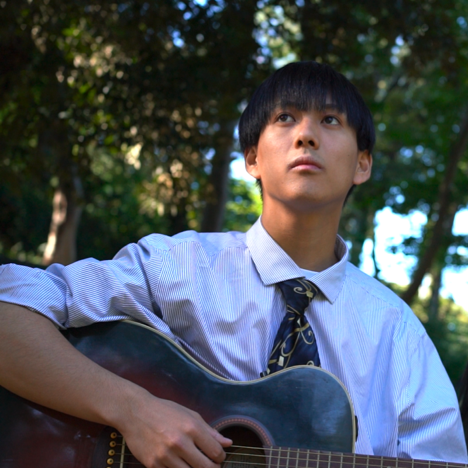
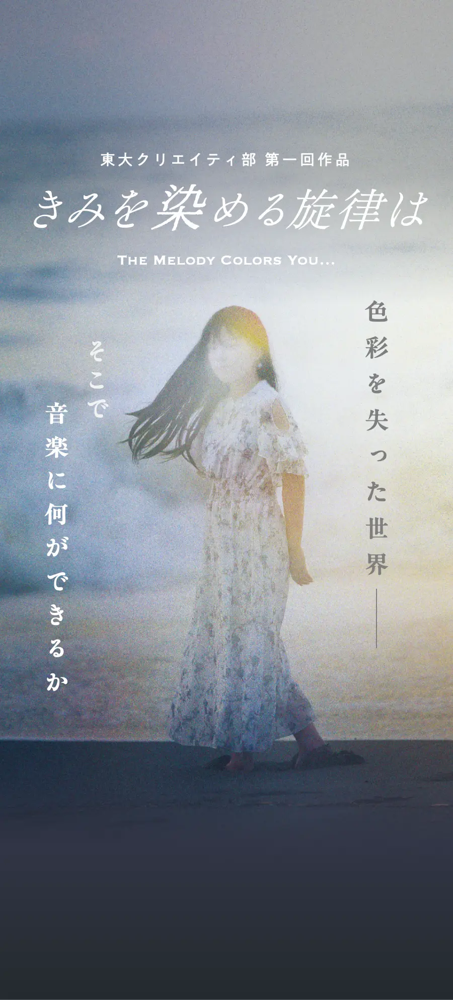
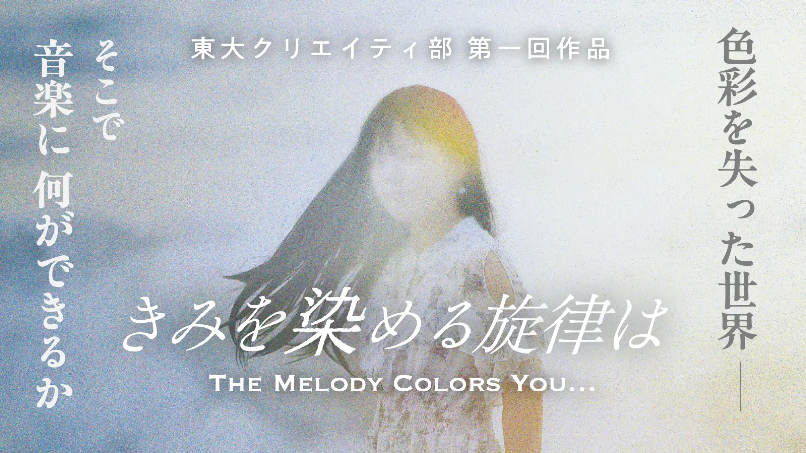
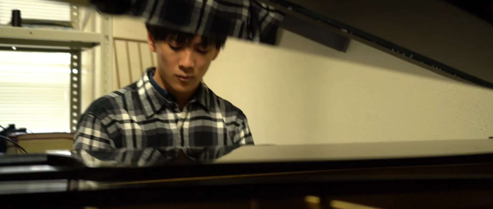
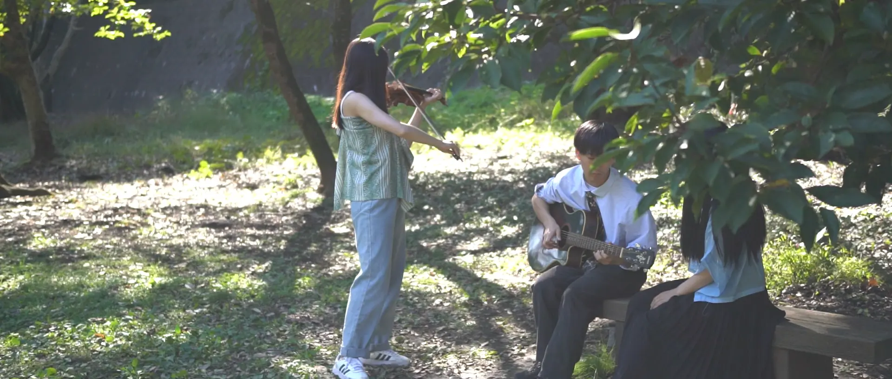
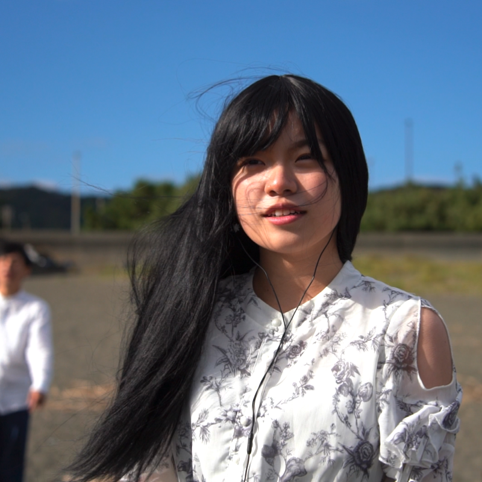
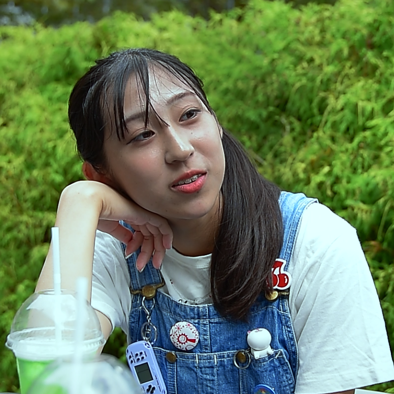
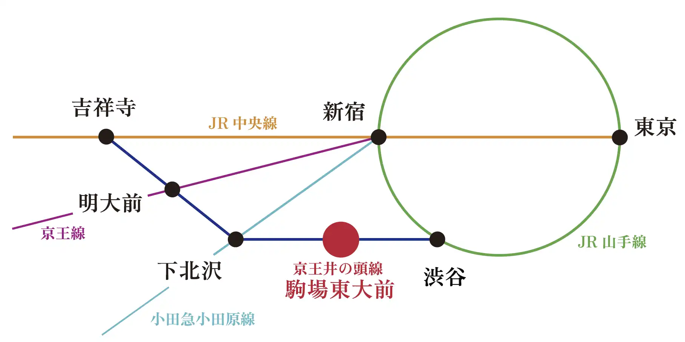

主人公
大学一年生。音楽で人や物を自在に操る「感性の力」を持つ。彩花を喜ばせるため、不器用ながら一生懸命になる。


色彩を持たず
白黒の世界に生きるヒロイン・彩花。
彼女を笑顔にしようと主人公は
不思議な音楽の力で色を蘇らせてゆくが…。



大学一年生。音楽で人や物を自在に操る「感性の力」を持つ。彩花を喜ばせるため、不器用ながら一生懸命になる。

主人公と高校からの同級生。幼い頃に色彩を失い、白黒の世界に生きる。

主人公の通う大学の2年生。自身も「感性の力」を持っており、主人公に声をかける。
東京大学駒場キャンパス ▶︎ アクセス
12号館1221教室
約40分 （開場は開演15分前）
（1.5時間ごとに1公演です）
22 10:30~ / 12:00~ / 13:30~ /
23 15:00~ / 16:30~
24 10:00~ / 11:30~ / 13:00~ /
14:30~ / 16:00~
東京大学 駒場Iキャンパス
京王井の頭線「駒場東大前」駅直結

東大クリエイティ部 UTCr
東京大学駒場キャンパスを拠点とし、映像制作を中心に、既存のジャンルにとらわれない多様な制作を行うクリエイティブ集団です。
公式サイト（準備中）